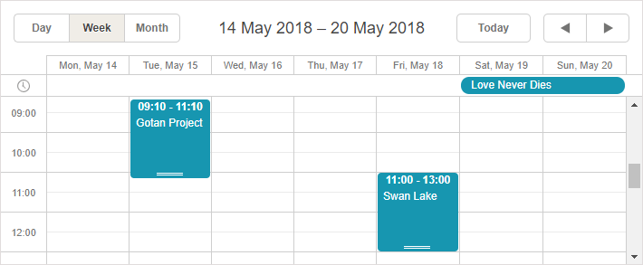
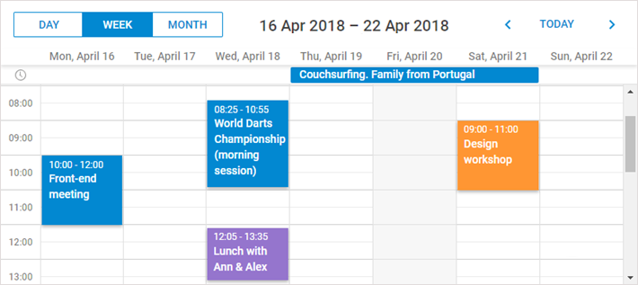
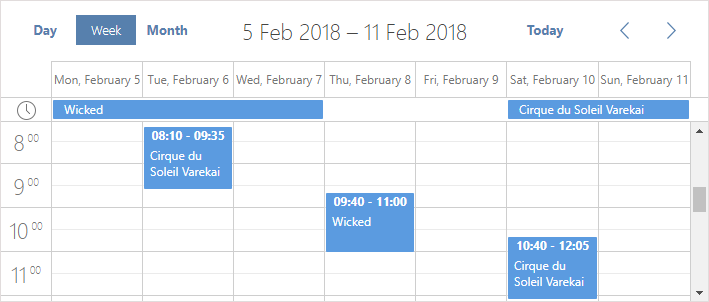
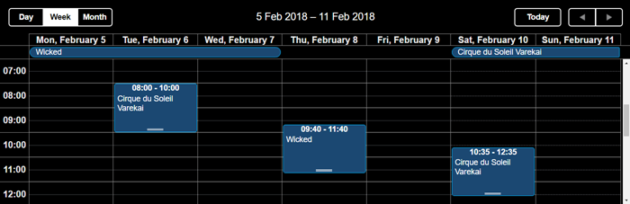
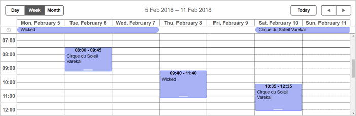

There are several predefined skins:
Each skin requires including its specific CSS file.
To apply the default skin, include the default CSS file:

To apply the 'Material' skin, include the CSS file as in:

By default, the material skin imports Roboto font from https://fonts.googleapis.com. Read more about Google Fonts here.
@import (css) url(https://fonts.googleapis.com/css?family=Roboto:400,500,600);
You can remove Roboto font, if necessary, directly from .less files in codebase/sources/less/skins/material folder and then rebuild the skin as described in the Skins Customization article.
To apply the 'Flat' skin, include the CSS file as in:

To apply the 'Contrast Black' skin, include the CSS file as in:

Related sample: High contrast theme - Black
To apply the 'Contrast White' skin, include the CSS file as in:

Related sample: High contrast theme - White
By default, the scheduler autodetects the skin by the name of a CSS file in use.
If you need to rename the CSS file, you can force correct skin usage by adding the following code line:
scheduler.skin = "flat";
// supported values are terrace, flat, material, contrast_white, contrast_black
If you are using a custom skin you can use:
scheduler.skin = "custom";